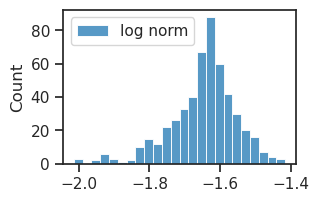

(04) fit — iterative pvae#
Motivation: host = mach, device = cuda:0
Show code cell source
# HIDE CODE
import os, sys
from IPython.display import display
# tmp & extras dir
git_dir = os.path.join(os.environ['HOME'], 'Dropbox/git')
extras_dir = os.path.join(git_dir, 'jb-vae/_extras')
fig_base_dir = os.path.join(git_dir, 'jb-vae/figs')
tmp_dir = os.path.join(git_dir, 'jb-vae/tmp')
# GitHub
# sys.path.insert(0, os.path.join(git_dir, '_PoissonVAE'))
sys.path.insert(0, os.path.join(git_dir, '_IterativeVAE'))
from figures.fighelper import *
from vae.train_vae import *
# warnings, tqdm, & style
warnings.filterwarnings('ignore', category=DeprecationWarning)
warnings.filterwarnings('ignore', category=FutureWarning)
warnings.filterwarnings('ignore', category=UserWarning)
from rich.jupyter import print
%matplotlib inline
set_style()
from base.utils_model import load_quick
from figures.analysis import plot_convergence
from figures.imgs import plot_weights
device_idx = 0
device = f'cuda:{device_idx}'
print(f"device: {device} ——— host: {os.uname().nodename}")
device: cuda:0 ——— host: mach
Poisson Omniglot + Amortized, MLP decoder#
Get configs#
model_type = 'poisson'
cfg_vae, cfg_tr = default_configs('Omniglot', model_type, 'mlp|mlp')
seq_len = 1
cfg_vae['track_stats'] = True
cfg_vae['seq_len'] = seq_len
cfg_tr['kl_beta'] = 1.0
Make model + trainer#
vae = MODEL_CLASSES[model_type](CFG_CLASSES[model_type](**cfg_vae))
tr = TrainerVAE(vae, ConfigTrainVAE(**cfg_tr), device=device)
tr.n_iters
96000
Print info#
vae.print()
print(f"{vae.cfg.name()}\n{tr.cfg.name()}_({vae.timestamp})\n")
tr.show_schedules()
+-------------+------------+ | Module Name | Num Params | +-------------+------------+ | IPVAE | 933.2 K | | ——— | ——— | | layer | 933.2 K | +-------------+------------+
poisson_Omniglot_t-1_z-[128]_<mlp|mlp> b200-ep1000-lr(0.002)_beta(1:0x0.1)_temp(0.05:lin-0.5)_gr(50)_(2024_09_14,16:33)
print_num_params(tr.model.layer)
+--------------+------------+ | Module Name | Num Params | +--------------+------------+ | PoissonLayer | 933.2 K | | ——— | ——— | | enc | 465.9 K | | dec | 467.1 K | +--------------+------------+
print(tr.model.layer.dec)
Sequential( (0): Linear(in_features=128, out_features=234, bias=True) (1): SiLU(inplace=True) (2): Linear(in_features=234, out_features=428, bias=True) (3): SiLU(inplace=True) (4): Linear(in_features=428, out_features=784, bias=True) )
Fit model#
tr.train()
epoch # 1000, avg loss: 45.926605: 100%|████| 1000/1000 [15:23<00:00, 1.08it/s]
Task: Omniglot, Amortized, \((T, \beta) = (1, 1.0)\), MLP decoder
print(tr.model.layer.n_exp)
tensor([13], device='cuda:0', dtype=torch.int32)
log_rate = tonp(tr.model.layer.log_rate).ravel()
sns.histplot(log_rate, color='b');
w = tr.model.layer.get_weight()
norms = tonp(torch.linalg.vector_norm(w, dim=1))
_ = tr.model.show(order=np.argsort(norms))
sns.histplot(np.log(norms), label='log norm')
plt.legend()
plt.show()
dead = log_rate > 10.5
dead.sum()
0
%%time
kws = dict(
# seq_total=1000,
seq_batch_sz=1000,
n_data_batches=None,
active=~dead,
)
results = tr.analysis(**kws)
_ = plot_convergence(results, color='slateblue')
100%|████████████████████████████████| 66/66 [00:00<00:00, 251.74it/s]
/home/hadi/anaconda3/lib/python3.11/site-packages/matplotlib/transforms.py:2653: RuntimeWarning: divide by zero encountered in scalar divide
y_scale = 1.0 / inh
CPU times: user 2.22 s, sys: 66.1 ms, total: 2.29 s
Wall time: 2.28 s
Poisson Omniglot + Amortized, linear decoder#
Get configs#
model_type = 'poisson'
cfg_vae, cfg_tr = default_configs('Omniglot', model_type, 'lin|lin')
seq_len = 1
cfg_vae['track_stats'] = True
cfg_vae['seq_len'] = seq_len
cfg_tr['kl_beta'] = 1.0
Make model + trainer#
vae = MODEL_CLASSES[model_type](CFG_CLASSES[model_type](**cfg_vae))
tr = TrainerVAE(vae, ConfigTrainVAE(**cfg_tr), device=device)
tr.n_iters
96000
Print info#
vae.print()
print(f"{vae.cfg.name()}\n{tr.cfg.name()}_({vae.timestamp})\n")
tr.show_schedules()
+-------------+------------+ | Module Name | Num Params | +-------------+------------+ | IPVAE | 803.8 K | | ——— | ——— | | layer | 803.8 K | +-------------+------------+
poisson_Omniglot_t-1_z-[512]_<lin|lin> b200-ep1000-lr(0.002)_beta(1:0x0.1)_temp(0.05:lin-0.5)_gr(50)_(2024_09_14,16:07)
print_num_params(tr.model.layer)
+--------------+------------+ | Module Name | Num Params | +--------------+------------+ | PoissonLayer | 803.8 K | | ——— | ——— | | fc_enc | 401.4 K | | fc_dec | 401.4 K | +--------------+------------+
print(tr.model.layer.dec)
None
Fit model#
tr.train()
epoch # 1000, avg loss: 47.650124: 100%|████| 1000/1000 [12:05<00:00, 1.38it/s]
Task: Omniglot, Amortized, \((T, \beta) = (1, 1.0)\)
print(tr.model.layer.n_exp)
tensor([11], device='cuda:0', dtype=torch.int32)
log_rate = tonp(tr.model.layer.log_rate).ravel()
sns.histplot(log_rate, color='b');
w = tr.model.layer.get_weight()
norms = tonp(torch.linalg.vector_norm(w, dim=1))
_ = tr.model.show(order=np.argsort(norms))
sns.histplot(np.log(norms), label='log norm')
plt.legend()
plt.show()
dead = log_rate > 1.5
dead.sum()
0
%%time
kws = dict(
# seq_total=1000,
seq_batch_sz=1000,
n_data_batches=None,
active=~dead,
)
results = tr.analysis(**kws)
_ = plot_convergence(results, color='slateblue')
100%|████████████████████████████████| 66/66 [00:00<00:00, 368.60it/s]
CPU times: user 1.54 s, sys: 62.1 ms, total: 1.6 s
Wall time: 1.6 s
Poisson Omniglot, linear decoder#
Get configs#
model_type = 'poisson'
cfg_vae, cfg_tr = default_configs('Omniglot', model_type, 'jacob|lin')
seq_len = 16
cfg_vae['track_stats'] = True
cfg_vae['seq_len'] = seq_len
cfg_tr['kl_beta'] = 2/4 * seq_len
Make model + trainer#
vae = MODEL_CLASSES[model_type](CFG_CLASSES[model_type](**cfg_vae))
tr = TrainerVAE(vae, ConfigTrainVAE(**cfg_tr), device=device)
tr.n_iters
96000
Print info#
vae.print()
print(f"{vae.cfg.name()}\n{tr.cfg.name()}_({vae.timestamp})\n")
tr.show_schedules()
+-------------+------------+ | Module Name | Num Params | +-------------+------------+ | IPVAE | 402.4 K | | ——— | ——— | | layer | 402.4 K | +-------------+------------+
poisson_Omniglot_t-16_z-[512]_<jacob|lin> b200-ep1000-lr(0.002)_beta(8:0x0.1)_temp(0.05:lin-0.5)_gr(50)_(2024_09_14,11:27)
print_num_params(tr.model.layer)
+--------------+------------+ | Module Name | Num Params | +--------------+------------+ | PoissonLayer | 402.4 K | | ——— | ——— | | fc_dec | 401.4 K | +--------------+------------+
print(tr.model.layer.dec)
None
Fit model#
tr.train()
epoch # 1000, avg loss: 27.757432: 100%|██| 1000/1000 [1:26:46<00:00, 5.21s/it]
Task: Omniglot, \((T, \beta) = (16, 8.0)\)
Done: Omniglot, \(T = 8, \,\, \beta = 4.0,\)
Done: Larger beta? \(T = 64, \,\, \beta = 80.0, \) was failure.
Done: longer seq for vH16:
\(T = 64, \,\, \beta = 32.0,\)
print(tr.model.layer.n_exp)
tensor([11, 14, 17, 22, 26, 30, 34, 36, 38, 40, 41, 42, 42, 42, 42, 42], device='cuda:0', dtype=torch.int32)
log_rate = tonp(tr.model.layer.log_rate).ravel()
sns.histplot(log_rate, color='b');
w = tr.model.layer.get_weight()
norms = tonp(torch.linalg.vector_norm(w, dim=1))
_ = tr.model.show(order=np.argsort(norms))
sns.histplot(np.log(norms), label='log norm')
plt.legend()
plt.show()

dead = log_rate > 1.5
dead.sum()
0
%%time
kws = dict(
seq_total=1000,
seq_batch_sz=1000,
n_data_batches=None,
active=~dead,
)
results = tr.analysis(**kws)
_ = plot_convergence(results, color='slateblue')
100%|█████████████████████████████████| 66/66 [04:02<00:00, 3.67s/it]

CPU times: user 3min 57s, sys: 13.1 s, total: 4min 10s
Wall time: 4min 10s
## Was: <jac|lin>, 8/4.0
MNIST#
Load model#
model_name = 'poisson_uniform_c(-2)_MNIST_t-8_z-[32]_k-32_<jacob|conv+b>'
fit_name = 'b200-ep500-lr(0.002)_beta(2:0x0.5)_temp(0.05:lin-0.5)_gr(1000)_(2024_09_06,22:41)'
tr, meta = load_model(model_name, fit_name, device=device)
meta['checkpoint']
500
log_rate = tonp(tr.model.layer.log_rate).ravel()
bias = tonp(tr.model.layer.bias).ravel()
fig, axes = create_figure(1, 2, (10, 2))
kws = dict(fill=True, lw=3, alpha=0.3, ax=axes[0])
sns.histplot(log_rate, color='C0', element='step', label=r'$\log r$', **kws)
kws = dict(fill=True, lw=3, alpha=0.3, ax=axes[1])
sns.histplot(np.exp(log_rate), color='C0', element='step', label='rate', **kws)
sns.histplot(bias, color='C8', element='step', label='bias', **kws)
axes[1].set(ylabel='')
add_legend(axes)
plt.show()
dead = log_rate < 0.5
dead.sum(), (~dead).sum(), dead.sum() / len(dead)
(1, 31, 0.03125)
%%time
kws = dict(
seq_total=1000,
seq_batch_sz=100,
n_data_batches=None,
active=~dead,
# full_data=True,
# return_recon=True,
)
results = {
name: tr.analysis(dl_name=name, **kws)
for name in ['vld'] # 'trn', 'tst']
}
100%|█████████████████████████████████| 50/50 [16:04<00:00, 19.29s/it]
CPU times: user 15min 56s, sys: 3.02 s, total: 15min 59s
Wall time: 16min 5s
colors = {'trn': 'C9', 'vld': 'C0', 'tst': 'k'}
for name, d in results.items():
if name != 'trn':
print('\n\n\n')
print('_' * 110)
print('-' * 110)
print(name)
plot_convergence(d, color=colors[name])
______________________________________________________________________________________________________________
--------------------------------------------------------------------------------------------------------------
vld
%%time
kws = dict(
seq_total=1000,
seq_batch_sz=100,
n_data_batches=1,
active=~dead,
full_data=True,
return_recon=True,
)
results_to_plot = {
name: tr.analysis(dl_name=name, **kws)
for name in ['trn', 'vld'] # , 'tst']
}
100%|███████████████████████████████████| 1/1 [00:39<00:00, 39.40s/it]
100%|███████████████████████████████████| 1/1 [00:39<00:00, 39.83s/it]
CPU times: user 1min 32s, sys: 3.26 s, total: 1min 35s
Wall time: 1min 21s
num = 32
shape = (tr.model.cfg.input_sz, ) * 2
for name, d in results_to_plot.items():
print('_' * 110)
print('-' * 110)
print(name)
x2p = np.concatenate([
d['x'][:num, 0],
d['y'][:num, -1].reshape(-1, *shape),
])
_ = plot_weights(x2p, nrows=2)
______________________________________________________________________________________________________________
--------------------------------------------------------------------------------------------------------------
trn
______________________________________________________________________________________________________________
--------------------------------------------------------------------------------------------------------------
vld
generate#
n_samples = 64
tr.model.reset_state(n_samples)
tr.model.update_pred(temp=0.0)
pred = tr.model.pred
output = tr.model.generate(pred, seq=range(300))
output = output.stack()
loss_kl = tonp(torch.sum(output['loss_kl'], -1))
u = tr.model.layer.log_rate.expand(n_samples, -1)
desc_len = tr.model.layer.loss_kl(u=u)
desc_len = tonp(torch.sum(desc_len, dim=-1))
list(output)
['ff', 'dist', 'samples', 'recon', 'loss_kl', 'loss_recon']
shape = (tr.model.cfg.input_sz, tr.model.cfg.input_sz)
nrows = 4
ncols = int(np.ceil(n_samples / nrows))
fig, axes = create_figure(nrows, ncols, (1.1 * ncols, 1.3 * nrows), 'all', 'all')
for sample_i, ax in enumerate(axes.flat):
i, j = sample_i // ncols, sample_i % ncols
x2p = tonp(pred[sample_i].reshape(shape))
ax.imshow(x2p, cmap='Greys_r')
ax.set_title(f"i = {sample_i}")
trim_axs(axes, len(pred))
remove_ticks(axes)
plt.show()
sample_i = 27
nrows, ncols = 4, 30
fig, axes = create_figure(nrows, ncols, (1.3 * ncols, 1.3 * nrows), 'all', 'all')
for idx, ax in enumerate(axes.flat):
i, j = idx // ncols, idx % ncols
x2p = tonp(output['recon'][sample_i, idx].reshape(shape))
ax.imshow(x2p, cmap='Greys_r')
remove_ticks(axes)
order = np.argsort(desc_len)[::-1]
for i in range(len(pred)):
if i > 10:
continue
sample_i = order[i]
nrows, ncols = 2, 20
fig, axes = create_figure(nrows, ncols, (1.3 * ncols, 1.3 * nrows), 'all', 'all', dpi=50)
tit = ' ——— '.join([
f"i = {i}, sample # {sample_i}",
f"desc len = {desc_len[sample_i]:0.2g}",
])
fig.suptitle(tit, fontsize=25, y=1.14)
x2p = tonp(pred[sample_i].reshape(shape))
axes[0, 0].imshow(x2p, cmap='Greys_r')
for idx, ax in enumerate(axes.flat[1:], start=1):
i, j = idx // ncols, idx % ncols
x2p = tonp(output['recon'][sample_i, idx - 1].reshape(28, 28))
ax.imshow(x2p, cmap='Greys_r')
remove_ticks(axes)
plt.show()